|
 |
| ГЭТТЕСТИВ (GATTESTIVE) teduglutide лиофилизат д/пригот. р-ра д/п/к введения | ||||||||||||||||||||||||||||||||||||||||||||||||||||||||||||||||||||||||||||||||||||||||||||||||||||||||||||||||||||||||||||||||||||||||||||||||||||||||||||||
|
Клинико-фармакологическая группа: Аналог глюкагоноподобного пептида-2 (ГПП-2), применяемый при синдроме короткой кишки (СКК) Номер и дата регистрации: ЛП-007112 от 24.06.21 Код ATX: A16AX08 |
Владелец регистрационного удостоверения: зарегистрировано Представительство: | |||||||||||||||||||||||||||||||||||||||||||||||||||||||||||||||||||||||||||||||||||||||||||||||||||||||||||||||||||||||||||||||||||||||||||||||||||||||||||||
Форма выпуска, состав и упаковка Лиофилизат для приготовления раствора для п/к введения в виде белого порошка или уплотненной в таблетку белой пористой массы (цельной или раскрошенной); растворитель - прозрачная бесцветная жидкость; восстановленный раствор - прозрачный либо со слабой опалесценцией, бесцветный раствор.
Вспомогательные вещества: L-гистидин - 3.88 мг, маннитол - 15 мг, натрия дигидрофосфата моногидрат - 0.645 мг, натрия гидрофосфата гептагидрат - 3.435 мг, 1H раствор хлористоводородной кислоты - q.s. до рН 7.4, 1M раствор натрия гидроксида - q.s. до рН 7.4. 1 предварительно заполненный шприц с растворителем содержит: вода д/и - 0.5 мл. Флаконы из боросиликатного стекла (тип I) объемом 3 мл (1) в комплекте с растворителем (шприц объемом 1.5 мл, количество растворителя - 0.5 мл, 1 шт.) - пачки картонные. Для контроля первого вскрытия пачки предусмотрено наличие двух специальных стикеров. | ||||||||||||||||||||||||||||||||||||||||||||||||||||||||||||||||||||||||||||||||||||||||||||||||||||||||||||||||||||||||||||||||||||||||||||||||||||||||||||||
| ||||||||||||||||||||||||||||||||||||||||||||||||||||||||||||||||||||||||||||||||||||||||||||||||||||||||||||||||||||||||||||||||||||||||||||||||||||||||||||||
Описание препарата основано на официально утвержденной инструкции по применению и утверждено компанией-производителем для издания 2023 г. | ||||||||||||||||||||||||||||||||||||||||||||||||||||||||||||||||||||||||||||||||||||||||||||||||||||||||||||||||||||||||||||||||||||||||||||||||||||||||||||||
Фармакологическое действие |
Фармакокинетика |
Показания |
Режим дозирования |
Побочное действие |
Противопоказания |
Беременность и лактация |
Особые указания |
Передозировка |
Лекарственное взаимодействие |
Условия хранения и сроки годности |
Условия реализации
Фармакологическое действие
Тедуглутид представляет собой аналог глюкагоноподобного пептида-2 (ГПП-2), производимый в клетках Escherichia coli с помощью рекомбинантной ДНК-технологии. Механизм действия Природный ГПП-2 человека, секретируемый L клетками кишечника, усиливает кишечный и портальный кровоток, подавляет секрецию соляной кислоты в желудке и снижает перистальтику кишечника. В доклинических исследованиях показано, что тедуглутид сохраняет целостность слизистой оболочки, стимулируя восстановление и нормальный рост кишечника путем увеличения размера кишечных ворсинок и глубины крипт. Фармакодинамика Подобно ГПП-2, тедуглутид представляет собой полипептидную цепь из 33 аминокислот, в которой аланин заменен на глицин во втором положении позиции N-конца. Замена единственной аминокислоты по сравнению с естественно вырабатываемым ГПП-2 приводит к возникновению устойчивости к расщеплению in vivo под действием фермента дипептидилпептидазы-4 (ДПП-4), что удлиняет период полувыведения тедуглутида. Тедуглутид увеличивает размер ворсинок и глубину крипт эпителия кишечника. В соответствии с данными доклинических исследований (см. раздел "Особые указания") и предполагаемым механизмом действия, одновременно с трофическими эффектами в отношении слизистой оболочки кишечника, существует риск стимулирования роста новообразований тонкой и/или толстой кишки. Проведенные клинические исследования не смогли ни исключить, ни подтвердить наличие этого повышенного риска. В ходе КИ отмечено несколько случаев образования доброкачественных колоректальных полипов, однако частота их образования не увеличивалась в сравнении с пациентами, получавшими плацебо. Помимо необходимости в проведении колоноскопии для удаления полипов к моменту начала терапии (см. раздел "Особые указания"), за каждым пациентом необходимо вести постоянное наблюдение с учетом его характеристик (например, возраста, основного заболевания, наличия полипов в анамнезе). Фармакокинетика
Всасывание Тедуглутид быстро всасывается из места п/к инъекции; Cmax в плазме крови достигается примерно через 3-5 ч после введения препарата во всех дозах. Абсолютная биодоступность тедуглутида для п/к введения высокая (88%). Не наблюдалось кумуляции тедуглутида после повторного п/к введения. Скорость и степень абсорбции тедуглутида пропорциональны дозе при однократном и повторном п/к введении в дозах до 20 мг. Распределение После п/к введения кажущийся Vd тедуглутида составляет 26 л у пациентов с синдромом короткой кишки. Метаболизм Метаболизм тедуглутида изучен не полностью. Т.к. тедуглутид является пептидом, его метаболизм, вероятно, соответствует основному механизму метаболизма пептидов. Выведение Терминальный Т1/2 тедуглутида составляет примерно 2 ч. После в/в введения плазменный клиренс тедуглутида составил примерно 127 мл/ч/кг, что эквивалентно скорости клубочковой фильтрации. В ходе исследования фармакокинетики препарата было подтверждено выведение тедуглутида почками у пациентов с почечной недостаточностью. Фармакокинетика у особых групп пациентов Дети. После п/к введения тедуглутида сходные значения Cmax продемонстрированы во всех возрастных группах с помощью метода популяционного фармакокинетического моделирования. Однако более низкая экспозиция (AUC) и более короткий Т1/2 отмечены у пациентов в возрасте от 1 года и до 17 лет по сравнению со взрослыми пациентами. Фармакокинетический профиль тедуглутида у этой популяции детей (согласно значениям клиренса и Vd) отличался от такового у взрослых пациентов после коррекции на массу тела. В частности, клиренс снижается с увеличением возраста от 1 года и по мере взросления. Отсутствуют данные у пациентов детского возраста с почечной недостаточностью средней тяжести или тяжелой степени, или терминальной стадией почечной недостаточности. Пол. В клинических исследованиях не наблюдалось значимых различий в зависимости от пола пациентов. Пожилые пациенты. В клинических исследованиях 1 фазы не выявлены различия в параметрах фармакокинетики тедуглутида у здоровых добровольцев моложе 65 лет в сравнении с добровольцами старше 65 лет. Опыт применения тедуглутида у добровольцев в возрасте от 75 лет и старше ограничен. Нарушение функции печени. В клинических исследованиях 1 фазы оценивали влияние печеночной недостаточности на параметры фармакокинетики тедуглутида после его п/к введения в дозе 20 мг. Максимальная экспозиция и общая величина экспозиции тедуглутида после однократного п/к введения дозы 20 мг были ниже (10-15%) у добровольцев с печеночной недостаточностью средней степени тяжести, чем у здоровых добровольцев. Нарушение функции почек. В клинических исследованиях 1 фазы оценивали влияние почечной недостаточности на параметры фармакокинетики тедуглутида после его п/к введения в дозе 10 мг. По мере прогрессирования почечной недостаточности до терминальной стадии значения основных параметров фармакокинетики тедуглутида увеличивались в 2.6 (AUCinf) и 2.1 (Cmax) раза по сравнению со значениями у здоровых добровольцев. Показания
Режим дозирования
Препарат Гэттестив предназначен только для п/к введения. Раствор препарата следует вводить п/к 1 раз/сут, ежедневно, чередуя участки инъекции в четырех квадрантах брюшной стенки. Если введение препарата в живот осложняется болевыми ощущениями, формированием рубцов или уплотнением ткани, для инъекции можно использовать область бедра. Не следует вводить препарат Гэттестив в/в или в/м. Лечение необходимо начинать под контролем врача, который имеет опыт лечения пациентов с СКК. Терапию не следует начинать до тех пор, пока пациент не достигнет стабильного состояния после периода адаптации кишечника. До начала терапии следует провести оптимизацию и стабилизацию в/в вводимой жидкости и парентерального питания. По результатам оценки клинического состояния пациента врач должен определить индивидуальные задачи терапии и предпочтения пациента. Терапию следует прекратить, если не достигнуто общее улучшение состояния пациента. Эффективность и безопасность терапии у всех пациентов следует непрерывно контролировать в соответствии с клиническими рекомендациями. Режим дозирования Взрослые пациенты Рекомендуемая доза препарата Гэттестив составляет 0.05 мг/кг массы тела 1 раз/сут ежедневно. Ниже в таблице 1 указан объем вводимого раствора препарата с учетом массы тела пациента. В связи с гетерогенностью популяции пациентов с СКК, некоторым пациентам может потребоваться тщательно контролируемое снижение суточной дозы препарата для улучшения переносимости лечения. В случае пропуска дозы препарата необходимо ввести ее как можно раньше в этот же день. Эффективность терапии следует оценивать через 6 месяцев лечения. Ограниченные данные клинических исследований показали, что некоторые пациенты могут отреагировать на терапию спустя более длительный период времени (т.е. те, у кого еще сохраняется толстая кишка или дистальный/терминальный отдел подвздошной кишки); если через 12 месяцев терапии не достигнуто общее улучшение, необходимо повторно оценить потребность в продолжении лечения. Продолжение терапии рекомендуется и для пациентов, которые отказались от парентерального питания. Таблица 1
Дети (≥1 года) Терапию должен начинать врач, имеющий опыт лечения СКК у детей. Рекомендуемая доза препарата Гэттестив у детей и подростков (в возрасте от 1 года до 17 лет) такая же, как у взрослых пациентов (0.05 мг/кг массы тела 1 раз/сут ежедневно). Ниже в таблице 2 указан рекомендуемый объем препарата с учетом массы тела ребенка. В случае пропуска дозы препарата необходимо ввести ее как можно раньше в этот же день. Рекомендуемый период терапии составляет 6 месяцев, после которого следует оценить эффективность терапии. У детей младше 2 лет эффективность терапии рекомендуется оценивать через 12 недель терапии. Отсутствуют данные о применении препарата более 6 месяцев у детей. Таблица 2
Объем шприца для инъекций для применения у детей должен быть 0.5 мл или меньше, с ценой деления 0.01 мл. Пожилые пациенты Коррекции дозы препарата у пациентов старше 65 лет не требуется. Пациенты с почечной недостаточностью Коррекции дозы не требуется у взрослых пациентов или детей с почечной недостаточностью легкой степени тяжести. Суточная доза препарата должна быть снижена на 50% у взрослых пациентов или детей с почечной недостаточностью средней степени тяжести и тяжелой степени (с КК менее 50 мл/мин) и терминальной стадией почечной недостаточности (см. раздел "Фармакокинетика"). Пациенты с печеночной недостаточностью Коррекции дозы не требуется у взрослых пациентов или детей с печеночной недостаточностью легкой или средней степени тяжести, учитывая результаты клинических исследований тедуглутида у пациентов с печеночной недостаточностью класса В по классификации Чайлд-Пью. Клинические исследования у пациентов с печеночной недостаточностью тяжелой степени не проводилось (см. разделы "Фармакокинетика" и "Особые указания"). Дети Безопасность и эффективность препарата Гэттестив у детей младше 1 года не установлены, данные отсутствуют. Инструкция по приготовлению раствора лекарственного препарата Гэттестив Количество флаконов, необходимых для введения одной дозы препарата, следует определять в зависимости от массы тела пациента и рекомендуемой дозы 0.05 мг/кг/сут. Во время каждого визита врач должен взвесить пациента, определить суточную дозу, которую следует вводить до следующего визита, проинструктировав соответствующим образом пациента. Таблицы с рекомендуемыми для инъекции объемами раствора препарата с учетом рекомендуемой дозы на кг массы тела и для детей, и для взрослых представлены выше в этом разделе. Если требуются 2 флакона препарата, необходимо повторить процедуру растворения порошка для второго флакона, а затем забрать дополнительный объем раствора препарата из второго флакона в шприц, уже содержащий раствор из первого флакона. Объем раствора, оставшийся после введения назначенной дозы препарата, необходимо удалить и утилизировать. Только для однократного применения. Инструкция по подготовке и введению препарата Гэттестив В упаковке препарата Гэттестив содержится:
Необходимые материалы, не включенные в упаковку:
Примечание: до начала процедуры следует убедиться в наличии чистой рабочей поверхности и вымыть руки. 1. Сборка предварительно заполненного шприца После подготовки всех необходимых материалов следует выполнить сборку предварительно заполненного шприца следующим образом: 1.1. Взять предварительно заполненный шприц с растворителем и откинуть верхнюю часть пластикового колпачка таким образом, чтобы он был готов к присоединению иглы для приготовления раствора препарата. 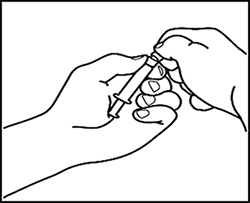 1.2. Присоединить иглу для раствора препарата (22G 11/2"; 0.7 × 40 мм) к предварительно заполненному шприцу, завинтив ее по часовой стрелке. 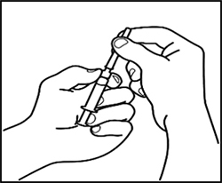 2. Растворение препарата 2.1. Удалить пластиковый диск типа "flip-off" с флакона с порошком, протереть верхнюю часть флакона спиртовой салфеткой и дать высохнуть. Не прикасаться к верхней части флакона. 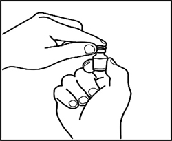 2.2. Снять колпачок с иглы на собранном, предварительно заполненном шприце с растворителем, не прикасаясь к кончику иглы. 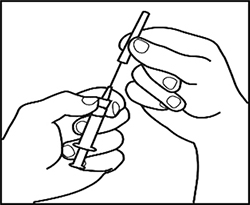 2.3. Проткнуть иглой предварительно заполненного шприца центр резиновой пробки флакона с порошком и мягко надавить на поршень шприца, вводя весь растворитель во флакон. 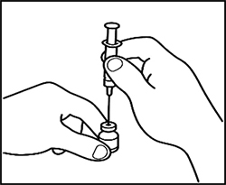 2.4. Оставить иглу с пустым шприцем, присоединенными к флакону, примерно на 30 сек. 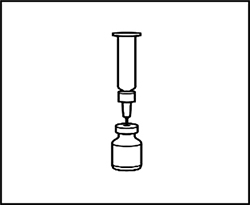 2.5. Осторожно вращать флакон между ладонями в течение 15 сек. Затем осторожно один раз повернуть флакон вверх- вниз, не вынимая иглу и пустой шприц из флакона. 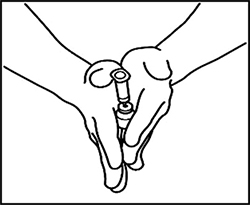 Примечание: не следует трясти флакон. Встряхивание флакона может вызвать образование пены, которая затрудняет извлечение раствора препарата из флакона. 2.6. Оставить флакон с присоединенным пустым шприцем на 2 мин. 2.7. Проверить флакон на наличие нерастворившегося порошка. Если порошок остался, повторить этапы 2.5 и 2.6. Не трясти флакон. Если во флаконе по-прежнему остался нерастворившийся порошок, следует выбросить флакон и начать подготовку раствора препарата с новым флаконом порошка. Примечание: приготовленный раствор должен быть прозрачным либо со слабой опалесценцией и бесцветным. Если раствор помутнел или содержит посторонние частицы, не следует использовать его. Примечание: после приготовления следует немедленно ввести раствор. Приготовленный раствор, если он не был введен сразу после восстановления, следует хранить при температуре ниже 25°C не более 3 ч. 3. Подготовка шприца для инъекций 3.1. Удалить из флакона с раствором препарата пустой шприц для растворения порошка, оставив иглу во флаконе, и выбросить шприц. 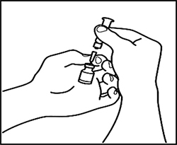 3.2. Взять шприц для инъекций и присоединить его к игле, которая еще находится во флаконе. 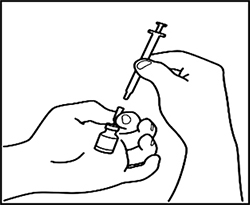 3.3. Перевернуть флакон вверх дном, сдвинуть кончик иглы поближе к пробке и ввести весь раствор препарата в шприц, осторожно потянув за поршень. 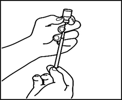 Примечание: если врач определил для введения 2 флакона с препаратом, следует подготовить второй предварительно заполненный шприц с растворителем и второй флакон с порошком, как описано на этапах 1 и 2. Ввести раствор из второго флакона в тот же шприц для инъекций, повторив этап 3. 3.4. Отсоединить шприц для инъекций от иглы, оставив ее во флаконе. Выбросить флакон с иглой в контейнер для утилизации острых предметов. 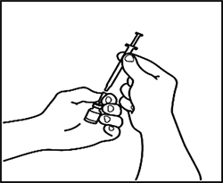 3.5. Взять иглу для п/к инъекций, но не снимать с нее пластикового колпачка. Присоединить иглу к шприцу для инъекций, в котором содержится раствор препарата. 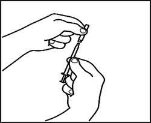 3.6. Проверить раствор в шприце на наличие пузырьков воздуха. При наличии пузырьков воздуха следует осторожно постучать по шприцу, пока они не поднимутся вверх. Затем осторожно вдавить поршень, чтобы выпустить воздух. 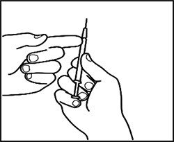 3.7. Доза/объем раствора препарата должна быть рассчитана лечащим врачом. Удалить избыточный объем раствора препарата из шприца, не снимая колпачка с иглы, пока в шприце не останется требуемая доза препарата. 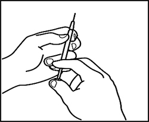 4. Выполнение инъекции 4.1. Определить участок на животе или на бедре, если инъекции на животе болезненны или имеются уплотнения (см. рисунок). 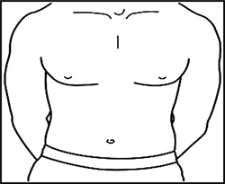 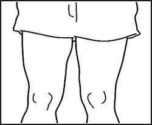 Примечание: не следует использовать для выполнения инъекций одно и то же место каждый день - следует менять участки (используйте верхний, нижний, левый и правый квадрант живота), чтобы избежать дискомфорта. Следует избегать введения раствора препарата в воспаленные, припухлые участки, участки с рубцами или родинками, родимыми пятнами или другими поражениями кожи. 4.2. Круговыми движениями протереть намеченный участок кожи тампоном, пропитанным спиртом. Дать ему высохнуть. 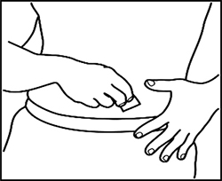 4.3. Удалить пластиковый колпачок с иглы шприца для инъекций. Одной рукой осторожно взять очищенную кожу в месте инъекции. Другой рукой необходимо держать шприц, как карандаш. Отвести запястье назад и быстро ввести иглу под углом 45°. 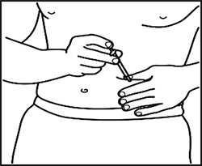 4.4. Немного оттянуть поршень. Если появилась кровь в шприце, необходимо извлечь иглу и заменить на чистую иглу того же размера. Все еще можно использовать препарат, который уже находится в шприце. Следует попробовать ввести в другое место на обработанном участке кожи. 4.5. Следует вводить препарат медленно, постоянно надавливая на поршень, пока весь раствор препарата не будет введен, а шприц пуст. 4.6. Потянуть иглу, вынимая ее из кожи, выбросить иглу и шприц в контейнер для утилизации острых предметов. Может возникнуть небольшое кровотечение. Если потребуется, следует осторожно прижать место инъекции ватным тампоном или марлевой салфеткой, пока не прекратится кровотечение. Побочное действие
Обзор профиля безопасности Наиболее частыми нежелательными реакциями (НР), зарегистрированными в клинических исследованиях тедуглутида, были: боль в животе, вздутие живота, инфекции дыхательных путей (включая назофарингит, грипп, инфекции верхних и нижних дыхательных путей), тошнота, реакции в месте инъекции, головная боль и рвота. Примерно у 38% пациентов со стомой, получавших терапию тедуглутидом, развились осложнения со стороны стомы. Большинство НР были легкой или средней степени тяжести. Не получено новых сигналов по безопасности у пациентов, получавших тедуглутид в дозе 0.05 мг/кг/сут до 30 месяцев в ходе продленного, открытого исследования. Перечень НР в виде таблицы Представленные ниже НР распределены по системно-органным классам с указанием частоты их возникновения согласно рекомендациям ВОЗ: очень часто (≥1/10); часто (≥1/100 до <1/10); нечасто (≥1/1000 до <1/100); редко (≥1/10000 до <1/1000); очень редко (<1/10000); частота неизвестна (частота не может быть определена на основании имеющихся данных). Все НР, зарегистрированные в рамках пострегистрационного периода применения препарата, выделены курсивом.
* Включает следующие предпочтительные термины: назофарингит, грипп, инфекции верхних дыхательных путей и инфекции нижних дыхательных путей. + Включает следующие предпочтительные термины: панкреатит, острый панкреатит и хронический панкреатит. ◊ Включает следующие предпочтительные термины: гематома в месте инъекции, эритема в месте инъекции, боль в месте инъекции, припухлость в месте инъекции и кровотечение в месте инъекции. Описание отдельных нежелательных реакций Иммуногенность В соответствии с потенциально иммуногенными свойствами лекарственных препаратов, содержащих пептиды, применение препарата Гэттестив может инициировать выработку антител. Согласно объединенным данным 2 клинических исследований, проведенных у взрослых пациентов с СКК (6-месячное рандомизированное, плацебо-контролируемое клиническое исследование с последующим 24-месячным открытым клиническим исследованием), которые получали п/к инъекции тедуглутида в дозе 0.05 мг/кг 1 раз/сут, антитела к тедуглутиду были обнаружены у 3% (2/60) пациентов через 3 месяца, у 17% (13/77) пациентов через 6 месяцев, у 24% (16/67) пациентов через 12 месяцев, у 33% (11/33) пациентов через 24 месяца, и у 48% (14/29) пациентов через 30 месяцев лечения. В ходе клинических исследований 3 фазы у 28% пациентов с СКК, которые получали тедуглутид в течение ≥2 лет, были обнаружены антитела к белку E. coli (остаточные белки штамма-продуцента). Продукция антител не ассоциировалась с клинически значимыми данными по безопасности, снижением эффективности или изменением фармакокинетики тедуглутида. Реакции в месте инъекций Реакции в месте инъекции развивались у 26% пациентов с СКК, получавших лечение тедуглутидом, по сравнению с 5% пациентов в группе плацебо. Реакции включали гематому, эритему, боль, припухлость и кровотечение в месте инъекции (см. также раздел "Особые указания"). Большинство реакций были умеренными по своей тяжести и не приводили к отмене препарата. C-реактивный белок В течение первых 7 дней терапии тедуглутидом наблюдали умеренное повышение концентрации C-реактивного белка примерно до 25 мг/л, которое непрерывно уменьшалось по мере продолжения ежедневного введения препарата. Через 24 недели применения тедуглутида у пациентов отмечалось небольшое общее повышение концентрации С-реактивного белка, в среднем на 1.5 мг/л. Эти изменения не сопровождались изменениями других лабораторных показателей или клиническими симптомами. Не наблюдалось клинически значимого среднего увеличения концентрации С-реактивного белка от исходного значения после продленной терапии тедуглутидом в течение до 30 месяцев. Дети В 2 завершенных клинических исследованиях 87 детей (в возрасте от 1 года до 17 лет) получали тедуглутид в течение периода до 6 месяцев. Ни один пациент не завершил преждевременно исследование из-за развития нежелательного явления. В целом, профиль безопасности тедуглутида (включая тип и частоту НР, а также иммуногенность) у детей и подростков (в возрасте 1-17 лет) был схожим с таковым у взрослых пациентов. Длительные данные по безопасности еще отсутствуют для детской популяции. Отсутствуют данные и для детей младше 1 года. Противопоказания
С осторожностью Следует соблюдать осторожность при назначении препарата Гэттестив пациентам с сердечно-сосудистыми заболеваниями, например, сердечно-сосудистой недостаточностью или артериальной гипертензией (см. раздел "Особые указания"); пациентам, принимающим одновременно препараты, требующие титрования дозы или имеющие узкий терапевтический индекс (см. разделы "Особые указания" и "Лекарственное взаимодействие"); пациентам с тяжелыми, клинически нестабильными сопутствующими заболеваниями (например, заболеваниями сердца и сосудов, легких, почек, печени, ЦНС или эндокринной системы, а также инфекционными заболеваниями) в связи с недостаточными клиническими данными. Применение при беременности и кормлении грудью
Беременность Нет данных о применении препарата Гэттестив у беременных женщин. В исследованиях на животных не выявлено прямой или косвенной репродуктивной токсичности препарата Гэттестив (см. раздел "Особые указания"). В качестве меры предосторожности рекомендуется избегать применения препарата Гэттестив у беременных женщин. Период грудного вскармливания Данных об экскреции тедуглутида с грудным молоком нет. У крыс среднее значение концентрации тедуглутида в молоке составило менее 3% от значения их плазменной концентрации после однократного п/к введения препарата в дозе 25 мг/кг. Нельзя исключать риск для новорожденных детей/младенцев, находящихся на грудном вскармливании. В качестве меры предосторожности рекомендуется избегать применения препарата Гэттестив у женщин в период грудного вскармливания. Фертильность Данных о влиянии тедуглутида на фертильность человека нет. Результаты исследований на животных не выявили нарушения фертильности. Особые указания
Следует регистрировать каждый случай введения препарата Гэттестив пациенту, записывая ФИО пациента и номер серии препарата, чтобы сохранить связь между пациентом и введенным препаратом. Взрослые пациенты Колоректальные полипы До начала терапии препаратом Гэттестив необходимо выполнить колоноскопию с удалением полипов. В течение первых 2 лет терапии препаратом Гэттестив рекомендуется ежегодно выполнять колоноскопию (или альтернативный метод визуализации). Далее колоноскопию рекомендуется выполнять не реже чем 1 раз в 5 лет. Потребность в увеличении частоты наблюдения определяется по данным индивидуальной оценки пациентов (например, возраст, основное заболевание). При обнаружении полипа следует придерживаться текущих рекомендаций по наблюдению за полипами. В случае развития злокачественной опухоли терапию препаратом Гэттестив следует прекратить. Желудочно-кишечная неоплазия, включая печень и желчевыводящие протоки В исследовании канцерогенности препарата на крысах доброкачественные опухоли были обнаружены в тонкой кишке и внепеченочных желчных протоках. Эти результаты не были подтверждены в клинических исследованиях длительностью более одного года. При обнаружении неоплазии ее следует удалить. В случае развития злокачественной опухоли терапию препаратом Гэттестив следует прекратить. Желчный пузырь и желчевыводящие протоки В ходе клинических исследований зарегистрированы случаи развития холецистита, холангита и желчнокаменной болезни. При появлении симптомов заболевания желчного пузыря или желчных протоков необходимо повторно оценить необходимость продолжения терапии препаратом Гэттестив. Заболевания поджелудочной железы В ходе клинических исследований зарегистрированы нежелательные явления со стороны поджелудочной железы, такие как хронический и острый панкреатит, стеноз протока поджелудочной железы, инфекция поджелудочной железы и повышение активности амилазы и липазы в крови. При развитии нежелательных реакций со стороны поджелудочной железы необходимо повторно оценить необходимость продолжения терапии препаратом Гэттестив. Мониторинг тонкого кишечника, желчного пузыря и желчных протоков, поджелудочной железы В соответствии с руководствами по терапии необходимо вести тщательное наблюдение за пациентами с СКК. Как правило, это мониторинг признаков и симптомов нарушения функции тонкой кишки, желчного пузыря и желчных протоков, поджелудочной железы, и, если потребуется, проведение дополнительных лабораторных исследований и соответствующих методов визуализации. Непроходимость кишечника В клинических исследованиях зафиксированы случаи непроходимости кишечника. В случае рецидива непроходимости кишечника необходимо повторно оценить необходимость продолжения терапии препаратом Гэттестив. Гиперволемия и электролитный баланс Чтобы избежать гиперволемии или обезвоживания у пациентов, получающих терапию препаратом Гэттестив, требуется тщательная корректировка парентеральной поддержки. Электролитный баланс и водный баланс следует тщательно контролировать на протяжении всего лечения, особенно во время первоначального терапевтического ответа и прекращения лечения. Гиперволемия. В клинических исследованиях наблюдались случаи гиперволемии. Гиперволемия наиболее часто развивалась в первые 4 недели терапии и уменьшалась со временем. В связи с повышенным всасыванием жидкости необходимо контролировать пациентов с заболеваниями сердечно-сосудистой системы, такими как сердечная недостаточность и артериальная гипертензия, в отношении развития гиперволемии, особенно в начале терапии. Пациенты должны сообщать своему врачу о внезапной прибавке массы тела, отеке лица и области голеностопных суставов и/или одышке. В целом, гиперволемию можно предотвратить, своевременно выполнив соответствующую оценку потребности в парентеральном питании. Эту оценку необходимо проводить чаще в первые месяцы терапии. В клинических исследованиях зарегистрированы случаи хронической сердечной недостаточности. При выраженном ухудшении заболевания сердечно-сосудистой системы необходимо повторно оценить необходимость продолжения терапии препаратом Гэттестив. Обезвоживание. Пациенты с СКК подвержены обезвоживанию, которое может привести к острой почечной недостаточности. Пациентам, получающим препарат Гэттестив, следует осторожно уменьшать парентеральное питание и не прекращать его применение резко. После уменьшения парентерального питания необходимо оценить объем жидкости у пациента и, если потребуется, провести соответствующую коррекцию. Сопутствующая терапия Необходимо осуществлять тщательный контроль за пациентами, получающими сопутствующую терапию пероральными лекарственными препаратами, требующими титрования дозы или с узким терапевтическим индексом, из-за возможного увеличения абсорбции. Особые клинические состояния Препарат Гэттестив не изучали у пациентов с тяжелыми, клинически нестабильными сопутствующими заболеваниями (например, заболеваниями сердечно-сосудистой, дыхательной, почечной, эндокринной, печеночной систем, ЦНС или инфекционными заболеваниями). Следует соблюдать осторожность при назначении препарата Гэттестив этим пациентам. Препарат Гэттестив не изучали у пациентов со злокачественными новообразованиями за последние 5 лет. Печеночная недостаточность Исследований препарата Гэттестив у пациентов с тяжелой степенью печеночной недостаточности не проводилось. Согласно полученным данным не требуется ограничивать применение препарата у пациентов с печеночной недостаточностью средней тяжести. Прекращение терапии Из-за риска развития дегидратации необходимо осторожно прекращать терапию препаратом Гэттестив. Дети Смотрите также общие предостережения, указанные для взрослых пациентов в этом разделе. Колоректальные полипы/Неоплазия До начала применения препарата Гэттестив всем детям и подросткам необходимо выполнить анализ кала на скрытую кровь. При наличии крови в стуле неясной этиологии следует провести колоноскопию/сигмоидоскопию. Последующее исследование кала на скрытую кровь следует выполнять ежегодно у всех детей и подростков на фоне применения препарата Гэттестив. Проведение колоноскопии/сигмоидоскопии рекомендуется всем детям и подросткам после 1 года лечения, а затем не реже чем 1 раз в 5 лет по мере продолжения терапии препаратом Гэттестив, а также в случае нового или необъяснимого желудочно-кишечного кровотечения. Доклинические данные по безопасности В исследованиях субхронической и хронической токсичности отмечали гиперплазию желчного пузыря, желчных протоков и протоков поджелудочной железы. Эти наблюдения потенциально ассоциировались с ожидаемыми фармакологическими свойствами тедуглутида и были обратимыми в разной степени в течение 8-13 недель после длительного применения. Канцерогенность/мутагенность. Результаты стандартного набора тестов на генотоксичность тедуглутида были отрицательными. В исследовании канцерогенности у крыс доброкачественные опухоли, связанные с терапией, включали опухоли эпителия желчного протока у самцов, у которых плазменные концентрации тедуглутида были примерно в 32 и 155 раз выше, чем у пациентов, получавших препарат ежедневно в рекомендуемой дозе (частота: у 1 из 44 и у 4 из 48, соответственно). Аденому слизистой оболочки тощей кишки наблюдали у 1 из 50 самцов и у 5 из 50 самцов, у которых плазменные концентрации тедуглутида были примерно в 10 и 155 раз выше, чем у пациентов, получавших препарат ежедневно в рекомендуемой дозе. Кроме того, аденокарцинома тощей кишки отмечена у самца крысы, получавшего препарат в наименьшей из исследуемых доз (величина плазменной экспозиции животного: человека различалась примерно в 10 раз). Токсичное влияние на репродуктивную систему и развитие плода. Исследования токсичного влияния тедуглутида на репродуктивную систему и развитие плода проводили на крысах и кроликах, которым препарат вводили в дозах 0; 2; 10 и 50 мг/кг/сут. Тедуглутид не оказывал влияния на репродуктивную функцию или параметры развития плода, определяемые в исследованиях фертильности, эмбриофетального развития, пре- и постнатального развития. Данные исследования фармакокинетики показали, что экспозиция тедуглутида у плода кролика и крыс-сосунков очень низкая. Реакции в месте инъекций В ходе доклинических исследований выявлены очаги выраженного гранулематозного воспаления в местах инъекций. Вспомогательные вещества Препарат Гэттестив содержит менее 1 ммоль натрия (23 мг) в одном флаконе, что практически означает отсутствие натрия в препарате. Влияние на способность к управлению транспортными средствами и механизмами Терапия препаратом Гэттестив оказывает незначительное влияние на способность управлять транспортными средствами и механизмами. Однако в клинических исследованиях препарата наблюдались обморочные состояния (см. раздел "Побочное действие"). Данные НР могут влиять на способность к управлению транспортными средствами и механизмами. Передозировка
Максимальная доза тедуглутида, которую изучали во время программы клинической разработки препарата, составляла 86 мг/сут в течение 8 дней. Неожидаемых системных НР не наблюдалось (см. раздел "Побочное действие"). В случае передозировки врач должен тщательно контролировать состояние пациента. Лекарственное взаимодействие
Исследований лекарственного взаимодействия тедуглутида не проводилось. Результаты исследования in vitro показали, что тедуглутид не ингибирует изоферменты системы цитохрома Р450, участвующие в метаболизме лекарственных средств. Учитывая фармакодинамический эффект тедуглутида существует возможность повышения абсорбции одновременно принимаемых лекарственных препаратов (см. раздел "Особые указания"). |
||||||||||||||||||||||||||||||||||||||||||||||||||||||||||||||||||||||||||||||||||||||||||||||||||||||||||||||||||||||||||||||||||||||||||||||||||||||||||||||
Вернуться наверх |
||||||||||||||||||||||||||||||||||||||||||||||||||||||||||||||||||||||||||||||||||||||||||||||||||||||||||||||||||||||||||||||||||||||||||||||||||||||||||||||
Copyright © Справочник Видаль «Лекарственные препараты в России», Москва, Россия